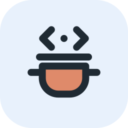
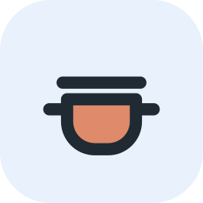
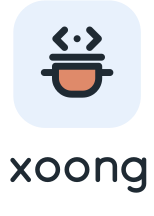

The idea
Xoong is the Vietnamese word for a saucepan, the pot every kitchen has and nobody replaces. That is the framework: one small, sturdy tool that does the whole job. The steam rising from the lid is a pair of angle brackets, so the pot reads as code at a glance. The design language is Mist (the Rainlet design system): calm, soft, one accent blue, nothing that dates.
The pot on the Mist tile
The clay pot, drawn with the Mist round stroke on the Mist tint tile; the lowercase wordmark is drawn with the same stroke, so it never depends on a font. Full guide and files: brand-mist.html.
 xoong-lockup.svg · on white
xoong-lockup.svg · on white

mark · 72 48 32 · simple mark 24 16
xoong-lockup-stacked.svgOne blue, one ink, soft greys.
Mist is the default palette, light and dark. The accent marks the primary action, the current place and focus: nothing is blue for decoration. Clay belongs to the pot only. Calm and Ember stay as selectable themes.
- Mist blue
#0B63CEAccent, primary button, focus.
- Blue strong
#084C9ESelected text, link hover.
- Ink
#1F2A33Text, tooltip, dark window.
- Page
#F5F7F8Background.
- Card
#FFFFFFSurfaces.
- Mist tint
#E8F1FCSelected, chips, tile.
- Line
#E2E8ECDividers; controls use #7E8C99.
- Clay
#DF8A6AThe pot only.
Dark (derived, approved by the Mist owner): page #121B22, card #1B2933, text #E8EEF2, accent #6AA8F0, controls #6B7D8A. The primary button stays #0B63CE with white text.
Be Vietnam Pro for headings, the system font for the rest.
Headings and brand surfaces use Be Vietnam Pro 400/500/600 (Latin and Vietnamese, self-hosted, SIL OFL). The interface and the prose use the system font stack: nothing to load, every script covered.
Be Vietnam Pro 600
system · 16px / 1.65
system · 14px
ui-monospace · 14px
Say it like a cook.
- Be concrete: “one way to do each thing”.
- Use kitchen words lightly: pot, recipe, ingredients.
- Say the status honestly: prototype, Draft syntax.
- Lead with what the reader can do next.
- Say “revolutionary”, “blazing” or “next-gen”.
- One cooking word per paragraph is enough.
- Promise what is still planned.
- Write the name in capitals. It is xoong.